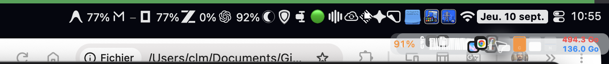
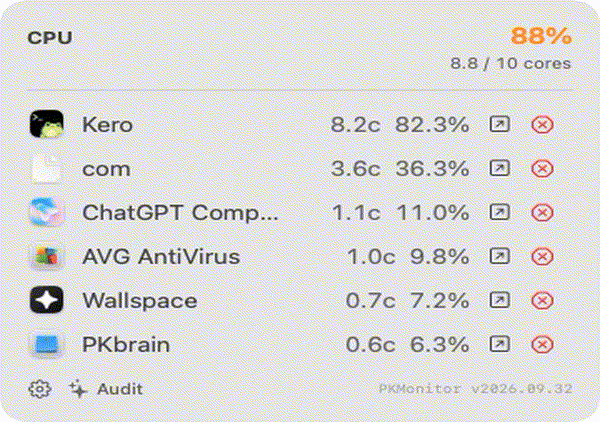
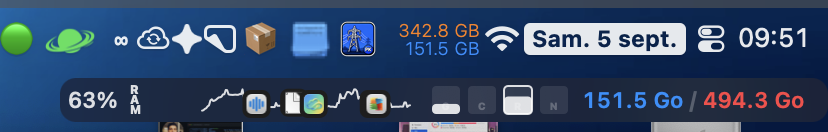
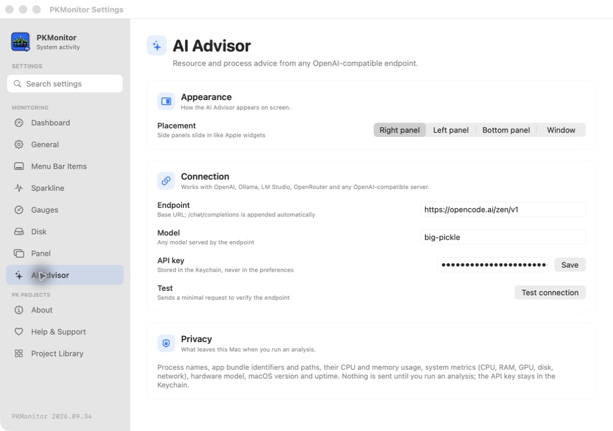

Gardez un œil.
Sur votre Mac.
CPU, GPU, RAM, réseau et disque dans la barre des menus. La sparkline pose les apps sur les pics — vous comprenez l’activité sans ouvrir un dashboard.

Un pic apparaît.
Vous savez qui.
La sparkline dessine l’activité en temps réel. VS Code compile, Chrome charge, WhatsApp appelle : l’icône de l’app dominante se pose sur le pic, et le survol ouvre le détail avec les processus gourmands.

Une barre plus nette.
Façon Bartender.
Descendez n’importe quelle icône de la barre des menus dans une seconde barre : cases à cocher, ordre réglable, clic transféré vers le menu d’origine. Vous gardez l’accès, sans l’encombrement.

Vos données restent.
Où elles sont.
Tout tourne en local. Le conseiller IA est optionnel : l’analyse ne part que vers votre endpoint compatible OpenAI, après un clic explicite, et la clé API reste dans le Trousseau macOS.

Un Mac plus calme
commence ici.
Installez PKMonitor en quelques secondes. C’est gratuit, open source, et fait pour macOS.
↓ Télécharger PKMonitor (.dmg)